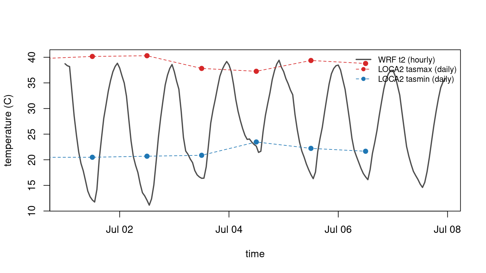
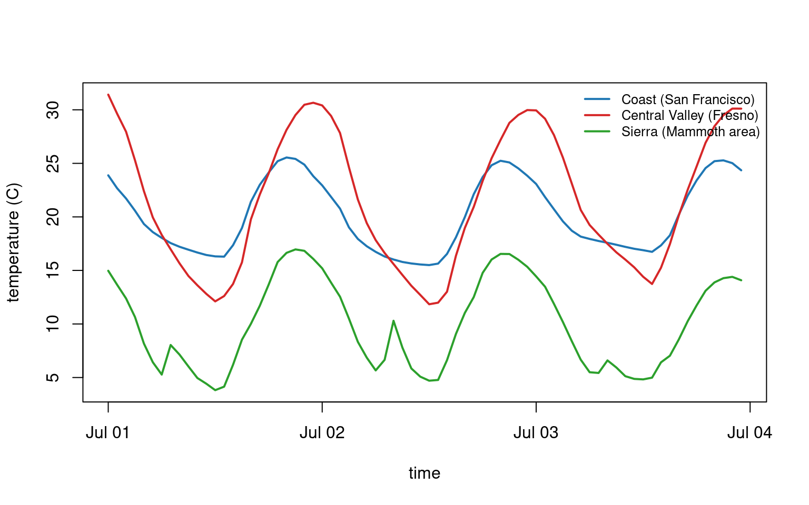
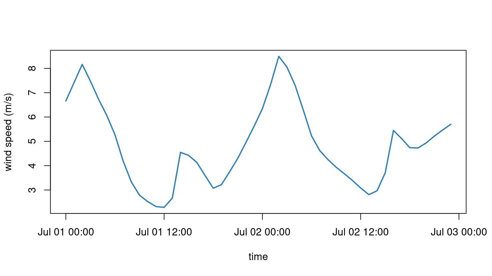
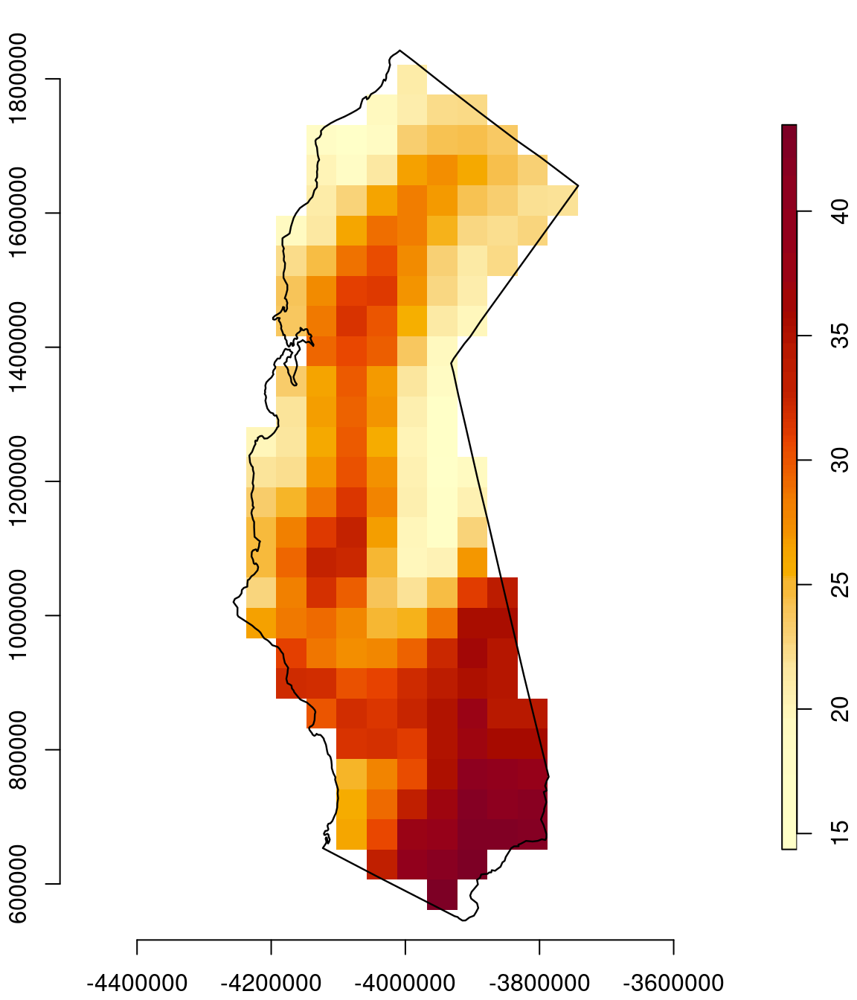

library(caladaptaer)Showcase
Quick answer to “what can I actually do with this thing.” Three questions you’d really ask about California’s climate future, each one knocked out in a few lines of R straight off live Cal-Adapt data.
Plots aren’t really the point. Point is, grabbing this data into R, which used to be hours of grief, is already handled, so you get to spend your time on science instead.
One interface, two very different products
Analytics Engine ships two downscaled products, and they flat out don’t line up. WRF is dynamical, hourly, sits on a 45 km Lambert grid, and calls near surface air temp t2. LOCA2 is statistical, daily, on a 3 km lat/lon grid, and doesn’t even carry a mean temperature, just daily tasmax and tasmin. Different physics, different grid, different time step, even different variable names.
caladaptaer hands you both back as one tidy data.frame, so you can just throw them on the same plot. Here’s the same GCM (EC-Earth3), SSP3-7.0, at Fresno, one week of July 2050, pulled from both.
# WRF: hourly t2, 45 km
wrf <- cae_fetch_point("t2", model = "EC-Earth3", scenario = "ssp370",
lon = -119.77, lat = 36.75,
start_time = "2050-07-01T00:00:00",
end_time = "2050-07-07T23:00:00")
# LOCA2: daily tasmax and tasmin, 3 km, same model and spot
tmax <- cae_fetch_point("tasmax", model = "EC-Earth3", scenario = "ssp370",
lon = -119.77, lat = 36.75,
timescale = "day", resolution = "d03",
start_time = "2050-07-01", end_time = "2050-07-07")
tmin <- cae_fetch_point("tasmin", model = "EC-Earth3", scenario = "ssp370",
lon = -119.77, lat = 36.75,
timescale = "day", resolution = "d03",
start_time = "2050-07-01", end_time = "2050-07-07")
head(wrf, 3)
#> time value
#> 1 2050-07-01 00:00:00 311.8828
#> 2 2050-07-01 01:00:00 311.5065
#> 3 2050-07-01 02:00:00 311.3383
head(tmax, 3)
#> time value
#> 1 2050-06-30 12:00:00 312.8626
#> 2 2050-07-01 12:00:00 313.3137
#> 3 2050-07-02 12:00:00 313.4529Same call both times. Past the variable name, only thing that changes is timescale = "day" and resolution = "d03" to aim at LOCA2 store instead of WRF one.
# kelvin to C
wrf$c <- wrf$value - 273.15
tmax$c <- tmax$value - 273.15
tmin$c <- tmin$value - 273.15
plot(wrf$time, wrf$c, type = "l", lwd = 2, col = "grey30",
ylim = range(c(wrf$c, tmax$c, tmin$c)),
xlab = "time", ylab = "temperature (C)")
lines(tmax$time, tmax$c, col = "#D62728", lty = 2); points(tmax$time, tmax$c, pch = 19, col = "#D62728")
lines(tmin$time, tmin$c, col = "#1F77B4", lty = 2); points(tmin$time, tmin$c, pch = 19, col = "#1F77B4")
legend("topright", bty = "n", cex = 0.8,
legend = c("WRF t2 (hourly)", "LOCA2 tasmax (daily)", "LOCA2 tasmin (daily)"),
col = c("grey30", "#D62728", "#1F77B4"),
lwd = c(2, 1, 1), lty = c(1, 2, 2), pch = c(NA, 19, 19))
And yeah, they disagree, that’s the honest read. WRF overnight lows run cooler than LOCA2 tasmin. Part of it is that 45 km WRF cell smears over way more, and way more varied, ground than that little 3 km LOCA2 cell, and part of it is that dynamical and statistical downscaling are just different animals. Bottom line, which product you grab changes your number. Pulling both into R side by side is how you actually see that for yourself instead of taking somebody’s word for it.
This is what we’re chasing next: one interface that lines up names, units, and time across both products, and quietly handles the known Cal-Adapt gotchas (those renamed humidity and wind variables, that precip unit fix) so you never trip over them. Home page has where that fits.
How much does the model you pick matter
Eight GCMs get dynamically downscaled in WRF. They all run through the same downscaling machinery, so stacking them up at one spot gives you a clean read on structural uncertainty: how much of your answer is actual climate, versus just which model spit it out.
wrf_370 <- Filter(
function(m) "ssp370" %in% cae_scenarios(activity = "WRF", model = m),
setdiff(cae_models(activity = "WRF"), "ERA5")
)
series <- lapply(wrf_370, function(m) {
d <- cae_fetch_point("t2", model = m, scenario = "ssp370",
lon = -119.77, lat = 36.75,
start_time = "2050-07-01T00:00:00",
end_time = "2050-07-01T23:00:00")
d$model <- m
d$c <- d$value - 273.15
d
})
series <- do.call(rbind, series)
cols <- hcl.colors(length(wrf_370), "Dark 3")
plot(series$time, series$c, type = "n", xlab = "time", ylab = "temperature (C)")
for (i in seq_along(wrf_370)) {
d <- series[series$model == wrf_370[i], ]
lines(d$time, d$c, col = cols[i], lwd = 2)
}
legend("topright", legend = wrf_370, col = cols, lwd = 2, cex = 0.7, bty = "n")
Models agree on the shape, cool night, hot afternoon, but they fan out hard on the actual temperature, 10 C or more apart at the afternoon peak (the hottest, MPI-ESM1-2-HR, tops 44 C while the coolest sits near 30). Clock is UTC, so that midday dip is really the local overnight low. Anything you run downstream that cares about temperature, a crop model, a fire index, a building load, an ecosystem carbon flux, that spread is the error bar you’re stuck with just from picking a model. Pushing the whole ensemble through to a calibrated answer is on our roadmap. Grabbing that ensemble in one place, today, is what makes it doable.
What only hourly data shows
LOCA2 and the raw GCMs are daily at best. WRF is hourly, and that cracks open something nothing else can: the shape of the day. Heat stress, evapotranspiration, nighttime respiration, they all key off the sub daily swing, not the daily mean. So here’s that swing at three California landscapes over a summer stretch in 2050.
sites <- data.frame(
name = c("Coast (San Francisco)", "Central Valley (Fresno)", "Sierra (Mammoth area)"),
lon = c(-122.42, -119.77, -119.03),
lat = c( 37.77, 36.75, 37.63),
col = c("#1F77B4", "#D62728", "#2CA02C")
)
series <- lapply(seq_len(nrow(sites)), function(i) {
d <- cae_fetch_point("t2", model = "CESM2", scenario = "ssp370",
lon = sites$lon[i], lat = sites$lat[i],
start_time = "2050-07-01T00:00:00",
end_time = "2050-07-03T23:00:00")
d$c <- d$value - 273.15
d$name <- sites$name[i]
d
})
series <- do.call(rbind, series)
plot(series$time, series$c, type = "n", xlab = "time", ylab = "temperature (C)")
for (i in seq_len(nrow(sites))) {
d <- series[series$name == sites$name[i], ]
lines(d$time, d$c, col = sites$col[i], lwd = 2)
}
legend("topright", legend = sites$name, col = sites$col, lwd = 2, cex = 0.8, bty = "n")
Coast barely budges, ocean pins it in a tight band. Central Valley swings the widest. Sierra site is coldest at every hour. That’s exactly the physics you’d expect, and it drops out of three cae_fetch_point() calls. No daily product can show you that.
Build a variable that isn’t in the file
Cal-Adapt hands you wind as two components, eastward u10 and northward v10, not as a single speed. No problem, grab both and combine them. Here’s the 10 m wind at Fresno over a couple of July days.
# eastward and northward components
u <- cae_fetch_point("u10", model = "CESM2", scenario = "ssp370", lon = -119.77, lat = 36.75,
start_time = "2050-07-01T00:00:00", end_time = "2050-07-02T23:00:00")
v <- cae_fetch_point("v10", model = "CESM2", scenario = "ssp370", lon = -119.77, lat = 36.75,
start_time = "2050-07-01T00:00:00", end_time = "2050-07-02T23:00:00")
# wind speed is just the magnitude
ws <- data.frame(time = u$time, speed = sqrt(u$value^2 + v$value^2))
plot(ws$time, ws$speed, type = "l", lwd = 2, col = "#2C7FB8",
xlab = "time", ylab = "wind speed (m/s)")
Same trick works for anything you can build off the raw fields, vapor pressure deficit, a heat index, reference ET. The parts are all in there.
Zoom out to the whole state
Points are one thing, but you can read the whole grid and clip it to whatever region you care about. Here’s a summer afternoon over California: pull the 45 km WRF field, clip it to the state, and you have a map and a number, the statewide average, out of the same object.
library(stars)
library(sf)
library(maps)
# one 45 km timestep over the western US
g <- cae_fetch("t2", model = "CESM2", scenario = "ssp370", resolution = "d01",
start_time = "2050-07-01T00:00:00", end_time = "2050-07-01T00:00:00")
# California polygon, into the WRF grid's projection
ca <- st_transform(st_as_sf(map("state", "california", plot = FALSE, fill = TRUE)), st_crs(g))
# clip the grid to the state, kelvin to C
g_ca <- g[ca]
g_ca[[1]] <- units::drop_units(g_ca[[1]]) - 273.15
# statewide average out of one aggregate call
round(as.numeric(aggregate(g, ca, FUN = mean, na.rm = TRUE)[[1]])[1] - 273.15, 1)
#> [1] 27.6plot(g_ca, reset = FALSE, axes = TRUE,
col = hcl.colors(100, "YlOrRd", rev = TRUE),
key.pos = 4, key.width = lcm(1.4), key.length = 0.8, main = "")
plot(st_geometry(ca), add = TRUE, border = "black", lwd = 1.2)
That’s 45 km, so California comes out to about 191 cells, blocky but honest. The statewide mean falls out of one aggregate() call. Want a county or a watershed instead? Swap the polygon, everything else stays the same.
Where this is going
Everything up there uses only what the package does today: read a point or a grid, across both products, in a few calls. Here’s where it goes from here.
- Analysis ready across products. One interface that harmonizes WRF and LOCA2 (names, units, grid, time) and applies the known Cal-Adapt data fixes automatically, so write once and run across both.
- Provenance you can reproduce from. Every output stamped with the exact store, version, slice, model, scenario, and transform that made it, and with the Cal-Adapt citation carried through, so a file can be rerun and cited from itself.
- The analysis layer. Spatial subsetting to counties and watersheds, temporal aggregation, derived variables, warming levels, and carrying the full ensemble through to calibrated uncertainty. Home page has the full roadmap, and Data Access walks every function with live output.